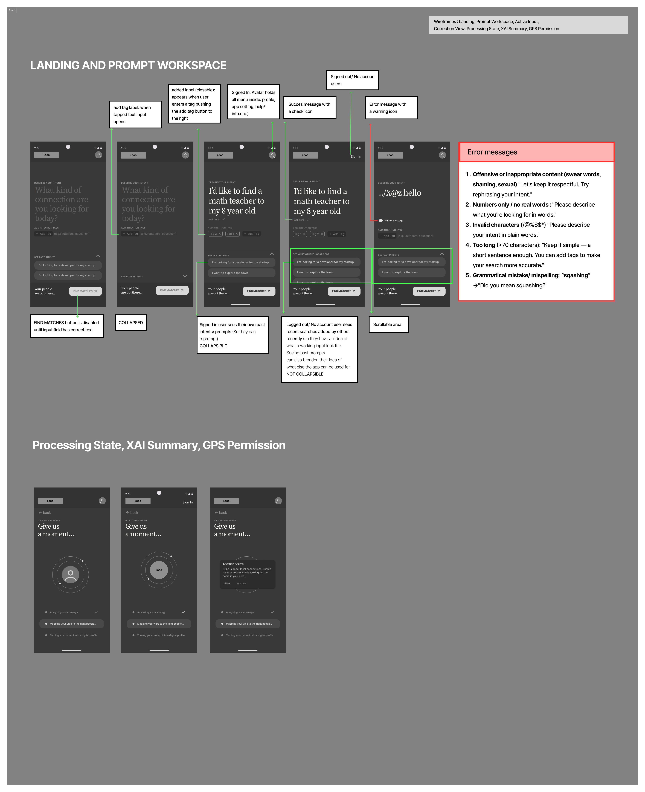
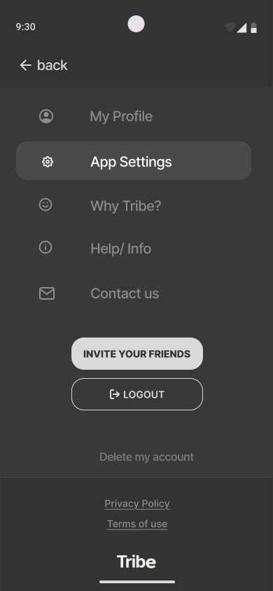
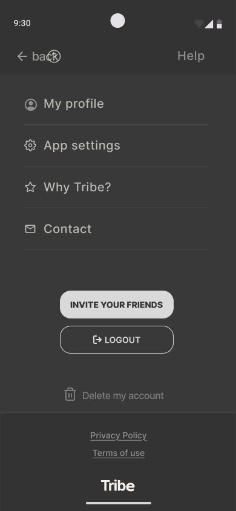
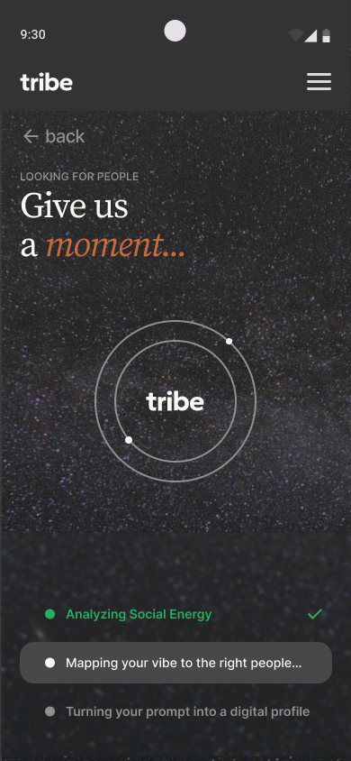
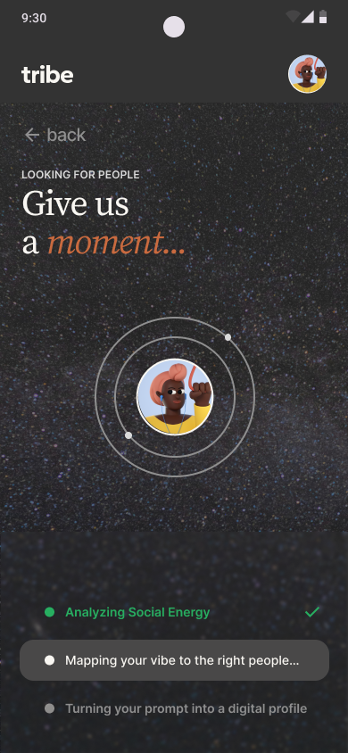
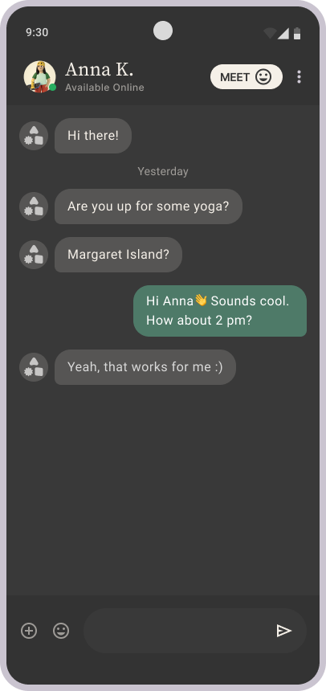
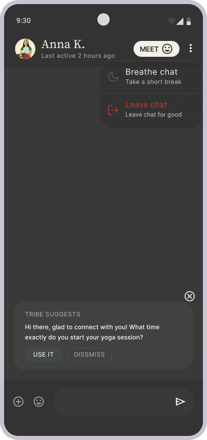
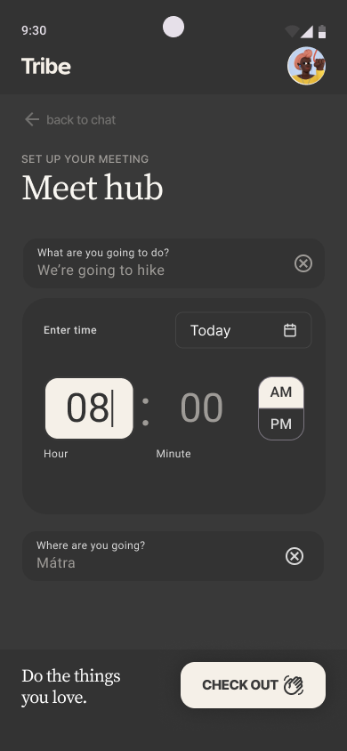
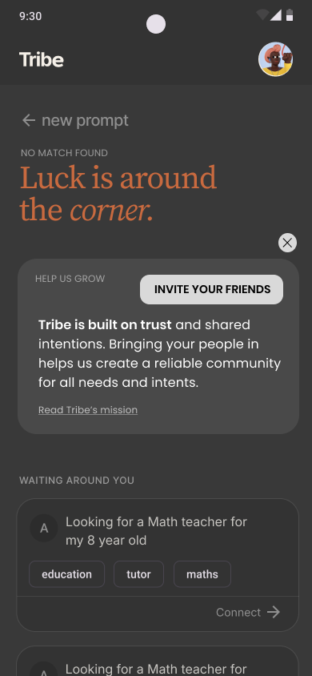

"The design problem wasn't matching. It was building enough safety for someone to type the thing they actually want."
Overview
Connect strangers through intent, not profiles.
A social app where one prompt replaces the profile. The whole product rests on a single text field — and the trust required to use it honestly.
Tribe connects people through a single prompt — not a profile, not a browse interface. The user types what they want to do, the AI matches them with people looking for the same thing, and connection happens before either party knows who the other is.
The entire product hangs on one text field. Making someone feel safe enough to be honest in it was the design problem — not the matching algorithm.
Problem
Every social app optimises for attention. Nobody designed for trust.
The market is saturated with engagement-first products. The unmet need was safer connection — intent-based, not identity-first.
The brief was an intent-based social network for Budapest. The real brief, once I'd mapped the competitive landscape, was: how do you get someone to type what they actually want — not a curated version of it — into a field connected to a stranger-matching algorithm?
That's a trust problem before it's a product problem. It shaped every design decision from the first sprint.

Sprint 1 wireframes. Error handling, processing logic, GPS permission timing, input states — thinking before the visual layer.
Research
Map the vulnerability states before opening a design tool.
Human factors gave me the frame. Three distinct states between intent and connection — each one a specific design problem.
The reframe
"The product's job isn't matching people. It's building enough psychological safety that someone types the thing they actually want."
The interaction gap diagram above was the first deliverable — before any screens. Three human states in the critical path from intent to connection. Each one mapped to a specific design response. This became the brief for every sprint that followed.
Edge cases carried the most design weight: the no-match screen, the breathe chat, the safety exit. These were where the product's character was decided — not in the happy path.
Breathe chat24h pause, no pressure. Reframes absence as temporary — not abandonment.
Report inlineZero navigation cost at the highest-stress moment. Report button appears in the same row.
Decisions
Three generations of input validation. Two of them died.
The prompt input is the product. Getting it right required understanding why the smart approach failed — technically, financially, structurally.
Gen 1 — Cut
Manual tags
Freeform. No structure. System can't match on noise.
Gen 2 — Cut
AI metadata extraction
Smarter — but unreliable JSON, 1.4s latency, 25× token cost.
Gen 3 — Shipped
Chip validation
NLP parses What / When / Where in real time. Hard to build. Worth the fight.
Why gen 2 died
The numbers
Structural unreliability
System expects {"tags":["x","y"]}. LLM returns conversational text. Fatal parse error. Every call needs a retry wrapper — just to extract two words.
Latency
800ms standard + 600ms metadata extraction = 1.4s wait before anything useful happens.
Token cost
15-word prompt + 400-token system prompt to classify it. 25× more to categorise than to process. Not viable for an MVP budget.
Why I pushed for gen 3
Chips are harder to build. I pushed for them because match quality is the entire product bet. Vague input → bad matches → no Tribe. The chips are the quality gate that makes everything downstream worth building.
Left to right: empty → "ba" → "basketball" (What chip fires) → full sentence (When + Where chips) → green face → FIND THEM unlocks → error state for special characters.
Other design decisions
Anonymous until mutual yes
Trust is bilateral — removes vulnerability of the initiating user
Profiles reveal gradually: initials only → mutual yes → images revealed. The asymmetry of "one person knows who the other is" creates a structural power imbalance. Removing it at the design level was more reliable than hoping users would feel safe.
Galactic background on passive screens only
Attention split on mobile kills both brand and task
Founder wanted galactic background everywhere. I pushed back: rich backgrounds compete with tasks on small screens. Resolution: atmosphere on passive screens (processing, waiting), clean surface on decision screens (prompt, results, accept/decline). The argument was grounded in cognitive load, not preference.
No chat search, one active conversation. The constraint is intentional: users who can only be in one chat take it more seriously. Motivation stays high. Tribe Suggests (AI conversation starter) supports the user without removing the constraint.
GPS deleted after match — aggregated only
Location used to find nearby people, not stored
My proposal: GPS appears mid-processing, used only until match is found, then deleted. Aggregated location used for statistics only. This was a trust signal I designed into the product spec — not a legal compliance item. The copy explicitly names it on the permission modal.
"Luck is around the corner" — positive no-match framing
Prevents abandonment without overselling the product
No match found: positive eyebrow + invite-friends module (closable) + 3 nearby intents the user can connect with (not matches — no compatibility score). Gives the user something real to do without pretending the product succeeded.
Solution
10 sprints. Full IA. A trust model built from first principles.
Complete design system, all interaction states, safety flows, and a documented trust model. The full flow from empty prompt to real-world meeting.
10
sprints
3
sprint sheets
7
core flows
0
templates used

Onboarding

Empty state
Validated

Processing

GPS ask
Matches

Chat

AI suggest

Meet hub

No match
What the product gained
A cognitive and ethical design layer that wasn't in the brief. Trust model structured and documentable, not assumed.
What remains unproven
Cold-start behaviour — the first time a real user types a real intent into the real system — is untested.
What surprised
The edge cases carried the most weight. No-match, breathe chat, safety exit — these decided the product's character.
What transfers
Map vulnerability states first. The happy path is not the frame. The human state at each step is.
Reflection
The processing copy needed more honesty.
"Analysing Social Energy" sat in the file for three sprints. It's atmospheric. It tells the user nothing about what is happening to their data.
The problem"Analyzing Social Energy" and "Mapping your vibe" — atmospheric copy at peak black-box anxiety. The user's data has just left their control. Wrong moment for personality.
Two trust asks at onceGPS permission arrives while atmospheric copy is still running. The copy needed to earn this moment — not undermine it.
In a product built on trust and data minimisation, the highest-anxiety moment deserved honesty, not atmosphere. The lesson: hold copy to the same standard as interaction design. They're describing the same human moment.
The insight that transfers
"The best interface doesn't ask you what you mean. It makes you feel safe enough to say it."